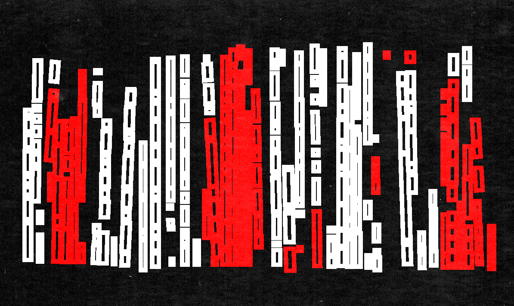
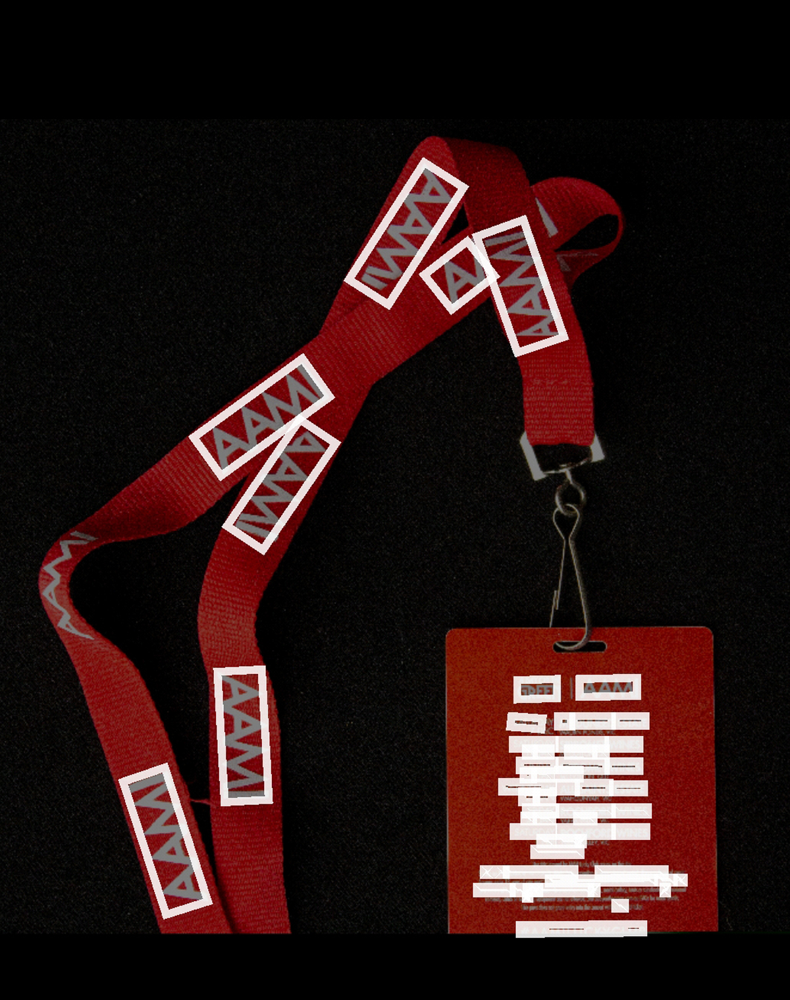

Digital Publishing
A Future Record
Will language ever be broken down by technology, or will it always be a imperfect science?
Potentially as our technologies improve, will these translation inaccuracies transform themselves within our language culture?
If so, what are these inaccuracies?
As a translation need evolves, will our methods change or will our language change?
will our future be translational layers on all language?
2200





image